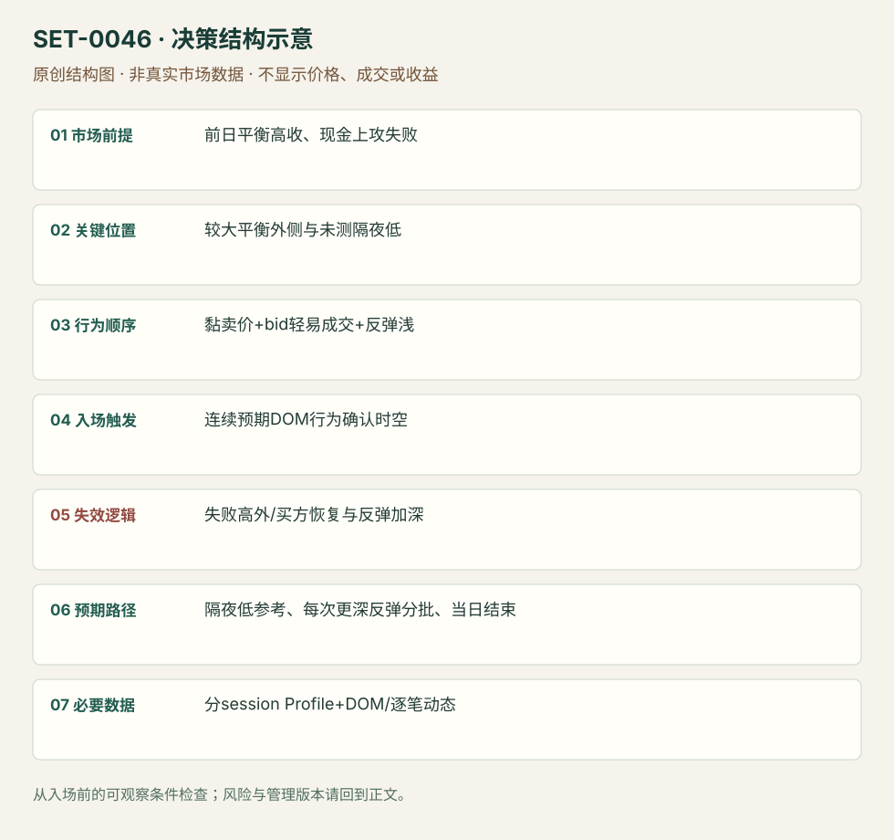

弱多头背景下黏住卖价的向下清仓
Sticky-offer Long-liquidation Continuation · SET-0046 · reviewed · v1.0.0
盈利证据：not_established。审查范围与来源版本见第13节；未知字段保留缺失原因。
1. 名称与快速概览
前日平衡但收在高位，下一现金开盘继续上冲失败；当卖价持续压住、买价轻易被拿且反弹浅时，交易向未测试隔夜低的下冲。
记录口径：PA non_primary；必要数据 session_profile、DOM、trade_prints、OHLC。名称性质：编辑性描述名，英文保留来源术语以便检索。reviewed 只表示本条规则与证据记录审查通过，盈利状态为 not_established。
2. 本质与行为假说
旧多头可能需要退出是作者库存解释；真正触发为连续sticky offer/taken bids，而非仅认为高收盘多头多。需要时序与真实成交，不能从一张深度快照识别。
3. 适用市场与环境
源例ES多周平衡外侧，较大方向弱、前日高收与当天失败。若现金开盘能持续接受更高价格，原清仓预期撤销。
来源实用市场：S&P500期货。
Session：来源ES前日现金/隔夜/欧洲/当前现金分开；本库09:30–16:00 America/New_York执行参考，收盘前平，其他段只提供背景。
跨市场：本版不主张已经验证的跨市场迁移；更换市场必须重定数据来源、流动性与session。
4. 出现前的观察清单
分别存前日现金、隔夜和欧洲段Profile，确认隔夜低未被测；画原上冲失败点。DOM定义反弹浅和offer保持的观测窗口，而不是凭口头形容。
5. 形成过程与状态转换
前日高收 → 隔夜窄范围 → 现金开盘向上失败 → sticky offer且bid被连续拿 → 下冲 → 反弹深度扩大/单向性消失。
6. Entry trigger 与执行方式
来源看到预期DOM人格就空，并在继续下行时加；本库保留单次初始进入为核心，加仓须独立记总风险。仅见挂单厚并未成交不触发。
7. Invalidation 与止损逻辑
失败上冲局部高外为编辑硬边界；offer不能保持、买方主动恢复、反弹变深是提前减仓/退出信息。不能用源例大仓位替实际风险定义。
8. Exit、target 与 trade management
未测隔夜低及下方结构为参照；来源每当反弹深于预期便分批退，浅反弹才持有。即使未拿满后续下跌，也不能回改出场为全天低点。session结束平。
9. 常见 variations
Footprint完成/未完成拍卖作为持有辅助，不另计setup；上下清仓需新素材再判断支持范围。
10. 失败方式与不交易条件
高价重新接受；隔夜低早已测过；报价拉走而非成交；反弹越来越深仍持空；把同一FOMC背景当即时消息单。
11. 与相近 setups 的区别
12. 图表与案例解读
已看现金Profile受阻图，支持高位背景。DOM执行阶段只读文字，因此真实图表覆盖是背景图，完整入口的动态视觉证据仍缺。
- [VIS-000049] Trapped longs that gave us conviction to enter short for the long liquidation break；定位：Trapped longs cash profile。高位受阻位置和现金profile被标出；此图核背景，不能单凭它核sticky offer动态。 验证：chart_viewed。

本地原创示意（VIS-000103，非真实市场数据）：

小屏阅读可打开原尺寸示意图并缩放。

此图用于对照识别顺序与风险定义；不计入真实案例覆盖率。
视觉材料元数据与查看范围
- VIS-000049 · real_source_chart / context_only / chart_viewed
品种：S&P500期货；日期：未知/不适用；周期：未知/不适用；时区：未知/不适用
日期未在图中核对；周期未在图中核对；时区未在图中核对；来源图表不是成交审计 - VIS-000103 · synthetic_structure_diagram / illustration_only / generated_not_market_evidence
品种：未知/不适用；日期：未知/不适用；周期：未知/不适用；时区：未知/不适用
无真实品种、日期或价格：这是结构示意
13. 证据、分歧与未知项
Axia具体执行叙事，Bookmap仅独立解释机制，核心佐证有限。原文22:08是视频定位，本研究未播放；仓位与获利为作者陈述，未审计。
- [EVD-000092] Axia Futures，《Trading Long Liquidation Break In US Equities》，SRC-0041；定位：context / sticky offer,taken bids / rotation management。支持：前日平衡收近高、次日高开失败和未测隔夜低；卖价黏住、买价被轻易成交时空，反弹加深分批退出。
- [EVD-000093] Bookmap editorial team，《How to Spot Long Liquidations Before They Break》，SRC-0069；定位：Pre-break buildup / absorption / liquidity shift。支持：独立说明多头脆弱与买方流动性变弱可能产生下冲；其执行主张反弹等待，不与本条空头入口混用。
审查边界：来源份数与独立核心核验分开；当前类别为 independent_context_only。正文中的概念、官方事实、衍生解说或同族资料只按其支持范围使用。
14. 可用于复盘的检查表
- ☐ 下单前的前提可核对：前日平衡高收、现金上攻失败
- ☐ 事前标记位置：较大平衡外侧与未测隔夜低
- ☐ 行为按顺序出现：黏卖价+bid轻易成交+反弹浅
- ☐ 实际触发符合选定版本：连续预期DOM行为确认时空
- ☐ 事先写明本次否定条件：失败高外/买方恢复与反弹加深
- ☐ 目标/路径只用当时已知信息：隔夜低参考、每次更深反弹分批、当日结束
- ☐ 数据满足 分session Profile+DOM/逐笔动态；记录时间、点差、滑点、队列和未成交
- ☐ 记录截止平仓及规则偏离；正常亏损不事后改成“未成立”
15. 后续验证问题
反弹深度按ticks或成交量归一化？删库存背景后DOM模式还有边际信息吗？清仓与新增主动卖出能否区分？
双向相关导航
- SET-0034 台阶久攻不破后的反向持仓退出 0034 台阶久攻失败后破相反范围，本条须高收/现金失败和黏卖价持续。
- SET-0047 厚市场被动承接的缓慢磨过 0047 原理在厚产品的被动买方慢推，触发不依快速bid被拿和反弹浅。